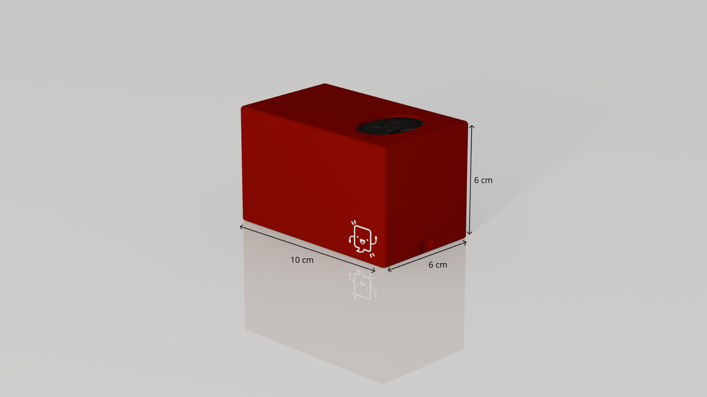
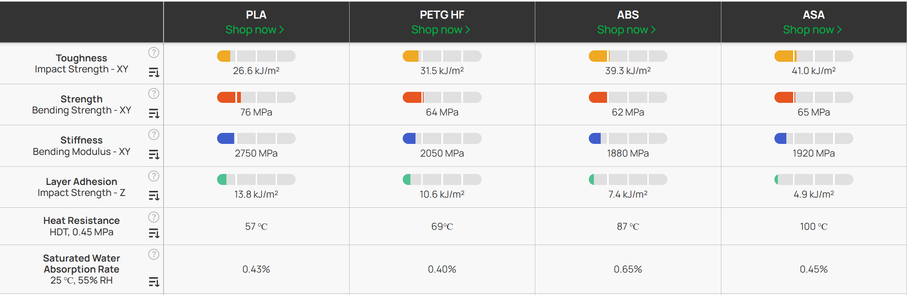

Conception 3D
Contraintes d’usage
Pour que Memo puisse remplir correctement sa fonction, il doit avant tout être portable, suffisamment compact pour pouvoir être transporté dans le sac banane qu’Elia utilise quotidiennement.
Afin de garantir une utilisation simple et intuitive, l’ergothérapeute d’Elia nous a orientés vers un design volontairement minimaliste, sous la forme d’un pavé droit, sans éléments visuels extérieurs. Ce choix permet à Elia de manipuler l’objet sans se soucier de son orientation, de le poser facilement, et de reconnaître immédiatement sa forme.

Nous avons ainsi conçu un boîtier compact de dimensions :
- 10 cm de long
- 6 cm de large
- 6 cm de haut
Ces dimensions offrent un compromis entre compacité et facilité d’intégration des composants internes. Elles laissent notamment une marge suffisante pour le passage des câbles, tout en conservant la possibilité de réduire le volume dans une version ultérieure.
Intégration mécanique des composants
Le boîtier doit également assurer le maintien sécurisé de l’ensemble des composants électroniques.
Dans un premier temps, nous avions envisagé l’utilisation d’inserts en laiton associés à des vis M2, afin d’obtenir une fixation robuste et démontable. Toutefois, pour assurer une fixation absolument sur-mesure, nous n'avons pas choisi cette solution.
Nous avons donc opté, pour une solution plus simple et plus adaptée basée sur des compartiments internes ajustés, maintenant les composants par friction.
Les dimensions des composants étant souvent imprécises dans les fiches techniques des fournisseurs, plusieurs itérations physiques ont été nécessaires afin d’obtenir des logements adaptés. Cette contrainte explique une part importante du nombre de prototypes réalisés.
Contraintes mécaniques
Comme indiqué précédemment, Elia présente des difficultés motrices, entraînant des manipulations parfois brusques ou imprécises . Il était donc indispensable de concevoir un boîtier capable de résister à la majorité des situations accidentelles.
En collaboration avec l’ergothérapeute et la mère d’Elia, les critères suivants ont été définis :
- Résistance à une chute jusqu’à 1 m, correspondant à une chute depuis une table ou depuis la main
- Résistance à une compression de 500 N, équivalente à une charge de 50 kg appliquée sur le boîtier, modélisant quelqu'un s'asseyant ou marchant sur la boite
- Résistance aux éclaboussures, afin de supporter un verre renversé, de la pluie ou une flaque
Modélisation et simulation
Conception assistée par ordinateur
Pour répondre à ces contraintes, nous avons utilisé une approche de conception assistée par ordinateur (CAO) avec le logiciel en ligne Onshape
Cet outil nous a permis de travailler de manière collaborative sur le modèle, mais également de tester rapidement différentes solutions sans avoir à multiplier les impressions physiques.
Onshape intègre un module de simulation par éléments finis, qui nous a permis d’évaluer la résistance mécanique, pour la chute ou la compression, du boîtier directement en phase de conception. Grâce à ces simulations, nous avons par exemple pu ajuster l’épaisseur des parois afin de corriger les zones de faiblesse identifiées.
Nous avons aussi effectué des tests de chute libre pour confirmer les résultats de simulation :
Certaines erreurs ont toutefois été rencontrées, notamment dans les tolérances des logements pour les composants électroniques. Ces problèmes, visibles sur les prototypes physiques, sont principalement liés à des données dimensionnelles imprécises fournies par les fabricants. Ils ont été corrigés progressivement par itérations.
Résistance à l’eau
Matériau
La résistance à l’eau a constitué une contrainte plus complexe à traiter. En effet, les objets issus de l’impression 3D ne sont pas parfaitement étanches en raison de leur structure en couches.
Il existe des solutions permettant d’améliorer l’étanchéité, notamment l’application de polymères spécifiques capables de combler les micro-interstices entre les couches, comme ceux proposés par Diamant Polymer. Toutefois, ces solutions n’ont pas été retenues, le besoin étant limité à une résistance temporaire.
D’après plusieurs retours expérimentaux, les filaments courants (PLA, ABS, PETG) offrent une résistance suffisante pour empêcher la pénétration de l’eau sur de courtes durées.
Points critiques
Les principaux points d’entrée potentiels pour l’eau sont :
- le port de chargement USB-C
- le haut-parleur
- le couvercle
Pour le port USB et le couvercle, des solutions de joints ont été envisagées. Les joints toriques ont été rapidement écartés en raison de contraintes de dimensions.
Nous avons finalement opté pour des joints imprimés en TPU, un matériau flexible et relativement imperméable, permettant une meilleure adaptation aux formes réelles.
Le haut-parleur, constituant une ouverture plus importante, a nécessité une approche différente. Nous avons choisi d’ajouter un film plastique souple placé entre la boite et le haut-parleur, afin de limiter les infiltrations tout en conservant une qualité sonore acceptable.
Nous avons ainsi effectué un test pour vérifier tout ceci, qui nous a bien confirmé la résistance de notre système aux éclaboussures:
Matériau d’impression
Le choix du matériau d’impression a été réalisé en comparant les principales options disponibles (PLA, ABS, PETG, ASA), notamment à l’aide de ressources techniques telles que celles proposées par Bambu Lab.

Les conclusions sont les suivantes :
- le PLA est facile à imprimer mais relativement cassant
- l'ABS est robuste mais plus contraignant à utiliser et peu résistant aux UV et à l'eau
- le PETG offre une bonne résistance aux chocs mais moins à la compression
- l' ASA offre des caractéristiques presque identiques à l'ABS mais avec une bien meilleure résistance environnementale
L' ASA a donc été retenu comme matériau privilégié, car il présente une meilleure capacité à absorber les chocs que le PLA et une meilleur résistance compressive que le PETG, tout en étant plus adapté à l'utilisation extérieure que l'ABS.
Accessibilité
Elia présente également une déficience visuelle nécessitant un contraste élevé.
Ce critère a été relativement simple à prendre en compte, Elia identifiant particulièrement bien le contraste rouge sur fond blanc. Le boîtier a donc été conçu en rouge, obtenu directement par le choix des filaments d’impression, pour bien se distinguer des fonds plus clairs souvent présents.